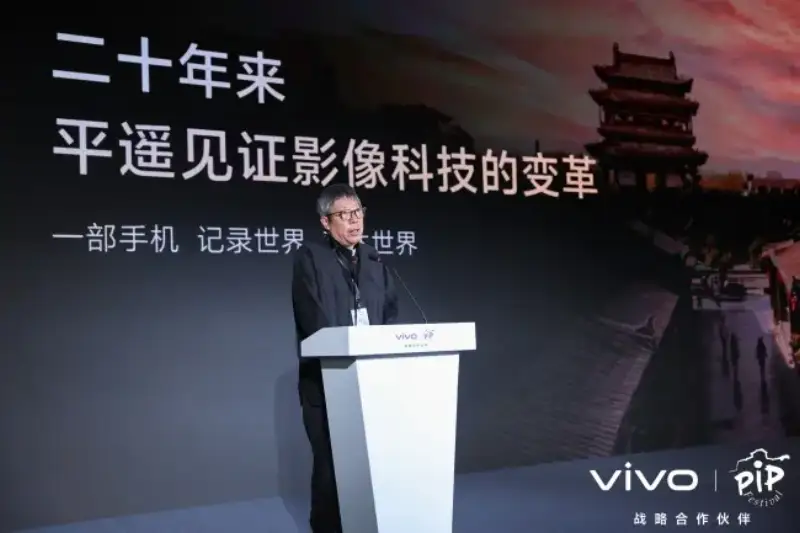
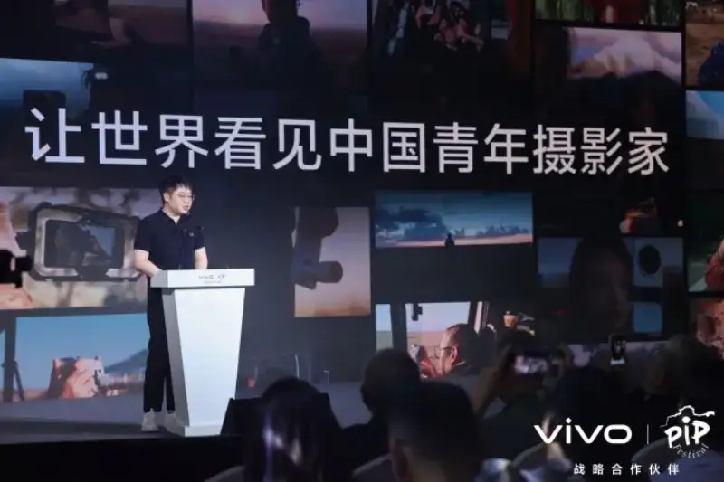
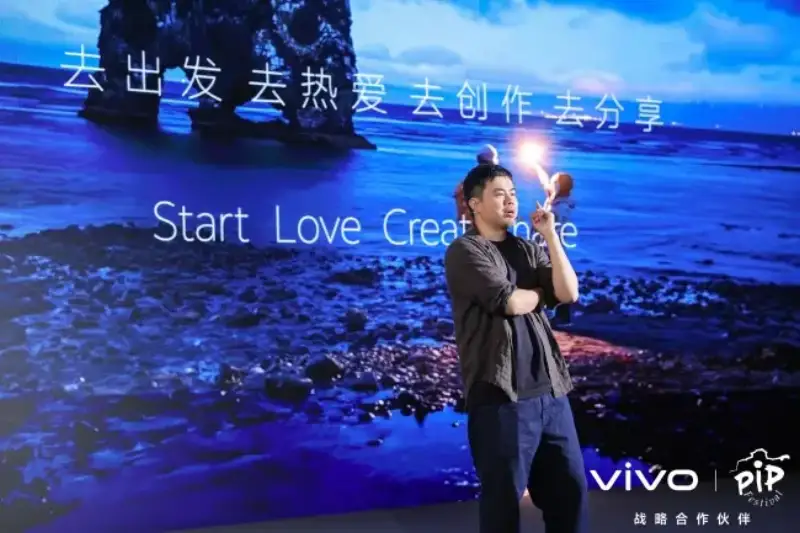

portant;">On September 20, 2026, in Pingyao, Shanxi, vivo became a strategic partner of the 26th Pingyao International Photography Festival. vivo and the festival co-hosted a Young Photographers Exchange Meeting to give image creators a stage to share and talk. At the same time, the vivo X500 series became the official phone of this festival, bringing creators a new blueprint imaging experience.
portant;">Zhang Guotian, artistic director of the Pingyao International Photography Festival, said the festival has for years given young photographers, young curators, and image-loving youth a platform to show and share. In the future, it will also act as a partner of the China Young Photographers Project, and keep recommending talent and offering a platform for the project.
portant;">

portant;">Zhang Guotian, artistic director of the Pingyao International Photography Festival, gives a speech.
portant;">Wu Jianrui, a representative of vivo, said that vivo has long focused on mobile imaging, and it believes the freshest energy in the field lies in the young. To this end, vivo and its imaging strategic partners will launch the China Young Photographers Project. Through a professional selection system, they will find young creative talent. Working with mentors, festivals, and other industry resources, they will train young photographers and support them over the long term, to help them become the backbone that drives the growth of China's imaging industry.
portant;">

portant;">Wu Jianrui, a representative of vivo, speaks.
portant;">In the tech-sharing session, Wu Hanxin, product manager of vivo imaging effects, introduced the new blueprint imaging technology of the vivo X500 series. He called it vivo's first step to break the impossible triangle of mobile imaging.
portant;">Chen Bin, a young photographer representative, drew on his five years of mobile imaging work to share stories of shooting the starry sky, landscapes, wildlife, and travel shorts with a vivo phone. He said many young people who love photography have their own creative direction, but they often lack exchange, guidance, steady support, and a way to be seen by the industry. The young-talent support that vivo and the Pingyao International Photography Festival are building gives young creators a reliable platform to create and exchange.
portant;">

portant;">Chen Bin, a young photographer representative, shares.
portant;">vivo has long focused on deepening mobile imaging technology and empowering creators. The China Mobile Photography Festival, which it runs with the China Photographers Association, has reached its second edition this year. It received 409,000 entries, up 66 percent year on year, and entries from creators under 35 made up 40 percent. In the future, the company will work with partners to give young creators more support, and keep using professional imaging technology to let more people enjoy mobile imaging creation.